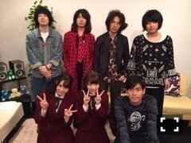
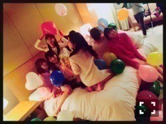

| 2016/01 16 Sat | ひめたん-0o0-その605 |
やあ( ´ ▽ ` )ﾉ
皆さんごきげんいかがでしょうか。
年が明けて早2週間。
取材に、撮影に、収録にと
充実した2016年を過ごしております
もう少ししたら色々と告知もできそうです。
明日はラジオもあるね！
皆さんもお仕事やら学校やら
始まったと思いますが一緒に頑張ろう～！
あ、そうだ、今日明日とセンター試験か！
受験生の皆さん
ラストスパートですね。
応援しています(´｡•ω•｡`)
きいちゃん♡
ささやかながら応援の気持ちということで
うしろにいっぱい本が置いてあったから
何となく貼ってみました。笑
日曜の夜はらじらー！サンデー
声優アーツにMachicoさん、
乃木坂から秋元真夏ちゃんが来てくれます！
今回のメールテーマは
◯2016年こんなこと出来たらいいな
◯裏キャラ対決
◯ひとりノリひめたん
真夏への応援メッセージや
レギュラーコーナーへの投稿も
お待ちしています⊂( ˆωˆ )⊃
おたよりの宛先はこちら。
ソニレコ最新回配信されました～！
ゲストに黒猫チェルシーさんを
お招きしましたよ！

チャンネル登録はこちらから
14thシングルの個別握手会が
全会場で5部参加できると聞きました
うわあ～嬉しいどうしましょう(´;ω;`)♡
私自身はもちろん嬉しいんですが
皆さんからお祝いコメントいただいたり
メンバーが一緒に喜んでくれたりして
なんか、こうやって連鎖してる感じが
また嬉しいです(´;ω;`)
表現下手ですね。雰囲気で受け取ってね。
それだけ色んな方に
応援してもらってるんだなって
改めて感じております。
今までより長い時間
皆さんとお話しできるということで
お会いできるの楽しみにしてますね♡

待ってるね～の顔(´｡•ω•｡`)
うーん、どうしよう。
最近経験したこと、観たもの、感じたこと
お話したいことはあるんだけど、
今はまだできないなあ。
今お話しできることはねー何だろう、
最近音楽プレーヤーを
水没させたことがショックでした。
乾燥剤と一緒にして
数日寝かせてるところです
どうでもいいですね～
写真もう一枚貼れる。どうしよう。

わちゃー♡
(＊´・ω・＊)
コメント(909)
2016/01/16 23:42